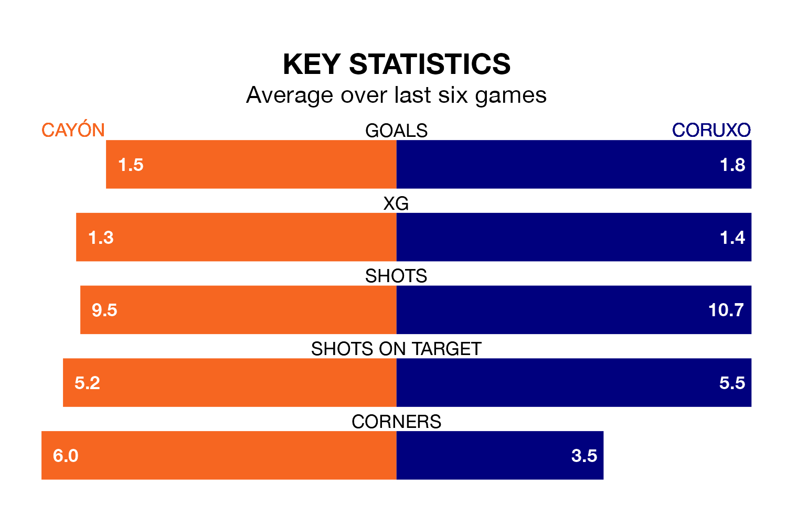

Coruxo face Cayón on Sunday seeking to protect their long unbeaten run in Segunda División RFEF Group 1.
Coruxo are unbeaten in five, with four wins and one draw, ahead of the 11am kick-off.
They face a Cayón team who have won two and drawn two over the same number of games.
With 17 goals in 18 games so far this season, Cayón are scoring at below the league average rate with 0.9 goals per game. And they are conceding at an average rate, letting in 21 goals at a rate of 1.2 per game.
Coruxo, meanwhile, are above average scorers, with 1.3 goals per game, compared to a league average of 1.2. They have also conceded 1.3 goals per game.
The home team are 15th in the table after 18 games, of which they have won three and drawn eight, earning 17 points.
The visitors are seven places ahead of Cayón in eighth, with eight wins and three draws putting them on 27 points.
Cayón's last match was on January 14, a 1-0 loss against Zamora CF.
Coruxo drew 1-1 with Real Valladolid B last time out, also on January 14.
Updated: 13:09 (UTC), 17/01/24